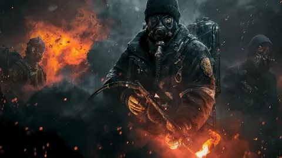
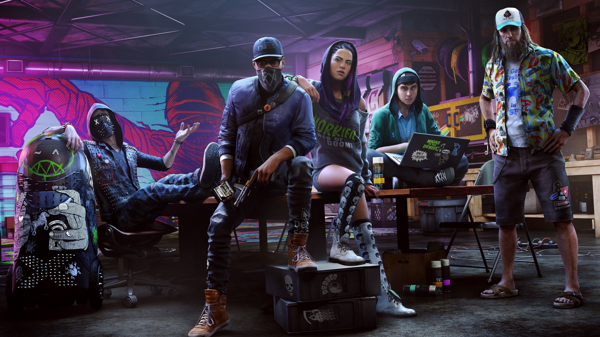
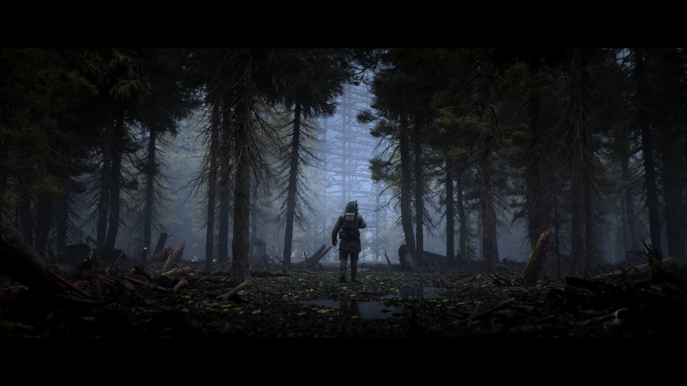
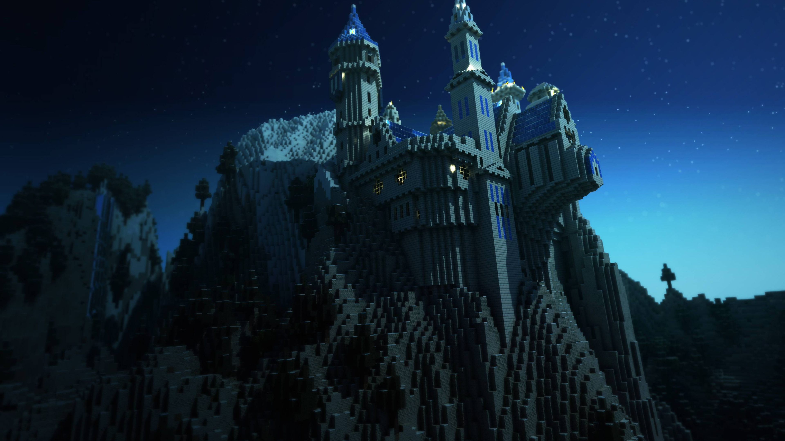

Категория игр

Action
экшен
Жанр компьютерных игр, в котором делается упор на
эксплуатацию физических возможностей игрока, в
том числе координации глаз и рук и скорости реакции.
Жанр представлен во множестве разновидностей от файтингов,
шутеров и платформеров, которые считаются наиболее важными
для жанра, до MOBA и некоторых стратегий в реальном времени,
которые возможно отнести к жанру экшен.

Strategies
стратегии
Игры данного жанра характеризуются тем, что игроку
для достижения цели необходимо применять стратегическое
мышление, и оно противопоставляется быстрым действиям
и реакцией, которые, как правило, не обязательны для
успеха в таких играх. История компьютерных стратегических
игр начинается с появления на Magnavox Odyssey игры Invasion,
которая являлась адаптацией настольной игры «Риск».

Puzzle
головоломки
В играх этого поджанра повторяется геймплей обычных игр-головоломок:
пасьянсов, маджонга, пятнашек и т. д. (возможно, с чисто компьютерными
дополнениями вроде ограничения по времени). В некоторых головоломках
игроку даются случайные блоки или кусочки, которые требуется собрать
в определённой последовательности и форме. Во такая вот короче история.
НОВОСТИ

Об игре Star Wars: Battlefront 2 / Лучшей игре года по мнению елитного издания Forbs
В игре представлена полноценная одиночная кампания, где вы
возьмете под свой контроль персонажа-женщину Иден Версио, сражающуюся
за Империю после событий фильма "Звёздные войны. Эпизод VI: Возвращение джедая".

Версия Halo Infinite для Xbox One всё ещё находится в разработке, утверждает разработчик 343 Industries
Ранее на этой неделе некоторые СМИ распространили о слухах о том, что грядущая
Halo Infinite будет эксклюзивом для консолей Microsoft следующего поколения, Xbox Series
X | S и ПК. Источник этого слуха – резюме на LinkedIn от дизайнера пользовательского
интерфейса игры, в котором упоминалось только о разработке консолей следующего поколения
наряду с ПК.

Фанат создал в Far Cry 5 квартиру Леонарда и Шелдона из "Теории Большого Взрыва"©
Геймер и дизайнер уровней Duncsmaps занимается тем, что воссоздает в Far Cry 5 с
помощью редактора карт различные локации из телешоу и фильмов. Он создал дом Маккалистеров
из Один Дома, Черный Замок из Игры Престолов, Дом Уизли и Азкабан из Гарри Поттера и т.д.
Одной из его последних работ стала квартира Леонарда и Шелдона из сериала "Теория Большого
Взрыва", который закончится в этом году.

Cоздатель Assassin's Creed пояснил историю с появлением в игре побочных заданий из-за ребёнка главы Ubisoft
Недавно бывший программист Ubisoft Чарльз Рэндалл, принимавший участие в разработке
первой части Assassin’s Creed 2007 года выпуска, рассказал, что побочные задания
добавляли в игру в последний момент. Всё из-за того, что якобы с проектом ознакомился
ребёнок главы Ubisoft, и игра показалась ему скучной.

Разработчики S.T.A.L.K.E.R. 2 выложили новый трек, который прозвучит в игре
GSC Game World опубликовала еще один трек, который прозвучит в S.T.A.L.K.E.R. 2.
Композиция получила название Zone Dreams. Это уже третья часть саундтрека,
которую опубликовали разработчики: предыдущие два трека называются Mass и 108 Bits of the Zone.

Художник показал, как может выглядеть ремейк Resident Evil 4 на Unreal Engine 4
Пока что это даже не игра, а лишь воссозданные локации. Сантьяго Ибарра
(Santiago Ibarra), художник по окружению из VOID Interactive, воспроизвёл
деревню, кладбище и церковь, используя современный движок. В будущем он
планирует добавить вид от третьего лица и персонажа Леона Кеннеди.

Minecraft — легендарная приключенческая песочница с видом от третьего лица
и обильными возможностями для создания предметов и строений
Главная особенность игры — творение собственного мира, который целиком и полностью
построен из кубов, начиная с ландшафта и заканчивая персонажами. Игра включает в
себя три режима: Творческий, Выживание и Хардкор.